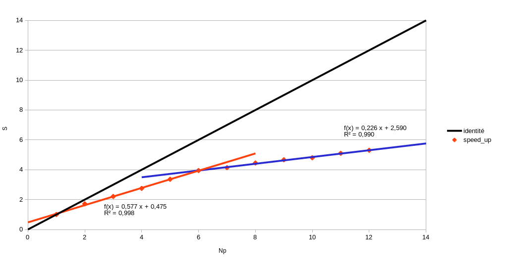
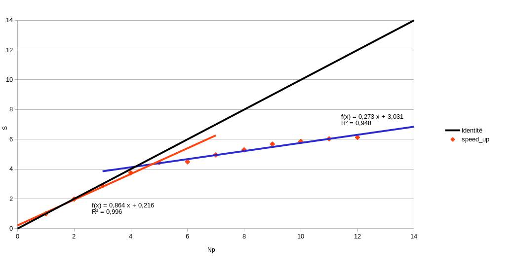
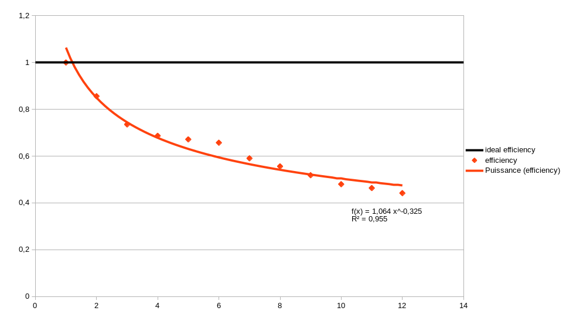
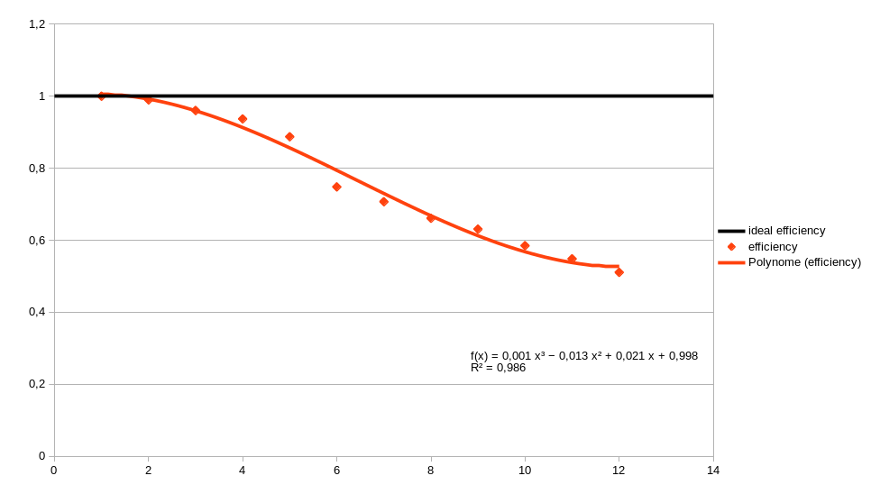

Parallélisation du code
Dans cette quatrième partie, on s'intéresse à paralléliser notre code. Cet intérêt est légitime étant donné qu'une simulation effectuée avec 100 gouttes sur l'aile NACA inclinée à 4 degrés avec \((x_0, y_0, u_0, v_0) = (-0.5, -0.082, 102.55, 7.17)\) sur un seul processeur prend pas moins de 48 minutes. Il est donc indispensable de faire tourner ce code en parallèle pour obtenir nos résultats sur plusieurs centaines, voir milliers de gouttes, d'autant plus qu'on observe une nette amélioration du temps de calcul en augmentant le nombre de processeurs (pour 6 processeurs on passe à 12 minutes de calcul et pour 12 processeurs on arrive à 9 minutes).
En pratique, la parallélisation du code n'est pas très compliquée compte tenu de l'hypothèse d'indépendance de chacune des gouttes. On se sert d'une fonction de répartition de charge pour distribuer une quantité à peu près équivalente de gouttes à chaque processeurs. On s'est servi de la librairie MPI, cependant une piste d'amélioration de notre travail est d'utiliser la librairie OpenMP qui est beaucoup plus adaptée.
Dans la suite, on s'intéresse aux performances de la parallélisation effectuée à l'aide de courbes de speed-up et d'efficacité.
Courbes de speed-up :
Le speed-up correspond à l'accelération du code. Il se calcule grâce à la formule : \(S = \frac{\text{temps sequentiel}}{\text{temps parallele}} \). On trace en Figure 1 le speed-up calculé pour de réelles simulations avec impact un large banc d'ensemencement des gouttes qui viennent taper (ou non) sur l'obstacle. Etant donné qu'il n'y a aucune communications entre les processeurs lors des calculs, on espérait obtenir une courbe de speed-up proche de l'identité, c'est-à-dire que le temps d'exéctution par le code sur 1 processeur serait égal à N fois le temps mis par le code avec N processeurs. Cependant on observe une évolution linéaire avec un coefficient directeur de 0.6 pour les 6 premiers processeurs, puis une évolution linéaire moins forte avec un coefficient directeur de 0.2 environ.
Au vu de ces résultats, nous avons pensé que la pente plus faible de la courbe de speed-up venait de l'utilisation de la bibliothèque MPI : contrairement à OpenMP où chaque thread éxecute des tâches jusqu'à ce qu'il n'y en ait plus, le code MPI calcul les coefficients beta par batch de processeurs. Ainsi, si un processeur met plus de temps à exécuter ses tâches que les autres, c'est lui qui décidera du temps de l'entiereté du batch. Plus le nombre de processeurs sera élevé, plus cet effet sera visible à cause de la répartition de gouttes à l'aide de la fonction charge qui n'est pas aléatoire : certains processeurs n'auront qu'à faire des calculs jusqu'à l'impact des gouttes tandis que d'autres devront sans cesse attendre que la goutte sorte du domaine de calcul. On explique ainsi la première partie de la Figure 1.
On a vérifié notre hypothèse en faisant tourner le code sur 50 itérations pour qu'aucune goutte n'impacte l'obstacle et qu'on ait une répartition des tâches équitable entre les processeurs. On obtient la Figure 2, et on observe bien une évolution (en rouge) quasi-idéale du speed-up pour un nombre de processeurs variant entre 1 et 5. Pour ce qui est de la partie bleue des courbes de speed-up des Figures 1 et 2, on observe une nette diminution de la pente de la droite par rapport à l'évolution de la partie rouge. On explique cette diminution par une mauvaise utilisation de la mémoire cache de la machine pour un certain nombre de processeurs.
-

Figure 1 : Speed up
-

Figure 2 : Speed up sans lecture de maillage et impacts
-

Figure 3 : Efficacité
-

Figure 4 : Efficacité sans lecture de maillage et impacts
On peut aussi s'intéresser aux courbes d'efficacité en considérant les deux mêmes cas que précédemment. L'efficacité est définie par : \(e = \frac{\text{S}}{\text{Nb procs}} \).
Elle permet de déterminer, à l'aide d'une valeur seuil à ne pas dépasser, à partir de quand il n'est plus très intéressant de continuer à ajouter des processeurs pour l'exécution du code. Sur les Figures 3 et 4, que l'évolution de l'efficacité en fonction du nombre de processeur ait l'allure d'une fonction puissance ou d'une fonction polynomiale, on voit l'existence d'un pallier se former au fur et à mesure qu'on mesure l'efficacité pour un nombre de processeurs élevé. En prenant comme critère qu'on souhaite une efficacité de plus de 70%, on prescrit d'effectuer les calculs avec 6 processeurs. On peut conclure que la parallélisation du code a eu un réel impact sur les résultats en diminuant fortement le temps de calcul. Cependant, les résultats obtenus ne sont pas aussi optimaux que ce que nous espérions. En effet, étant donné qu’aucune communication n’est effectuée entre les gouttes car il n’y a pas d’interaction entre elles, la courbe de speed-up devrait être bien meilleure. On explique nos résultats de par l'utilisation inadéquate de la librairie MPI ainsi que par une mauvaise gestion de la mémoire cache à partir d'un certain nombre de processeurs. Une piste d'amélioration à considérer pour notre travail serait d'utiliser une parallélisation OpenMP qui serait beaucoup plus adaptée.
Elle permet de déterminer, à l'aide d'une valeur seuil à ne pas dépasser, à partir de quand il n'est plus très intéressant de continuer à ajouter des processeurs pour l'exécution du code. Sur les Figures 3 et 4, que l'évolution de l'efficacité en fonction du nombre de processeur ait l'allure d'une fonction puissance ou d'une fonction polynomiale, on voit l'existence d'un pallier se former au fur et à mesure qu'on mesure l'efficacité pour un nombre de processeurs élevé. En prenant comme critère qu'on souhaite une efficacité de plus de 70%, on prescrit d'effectuer les calculs avec 6 processeurs. On peut conclure que la parallélisation du code a eu un réel impact sur les résultats en diminuant fortement le temps de calcul. Cependant, les résultats obtenus ne sont pas aussi optimaux que ce que nous espérions. En effet, étant donné qu’aucune communication n’est effectuée entre les gouttes car il n’y a pas d’interaction entre elles, la courbe de speed-up devrait être bien meilleure. On explique nos résultats de par l'utilisation inadéquate de la librairie MPI ainsi que par une mauvaise gestion de la mémoire cache à partir d'un certain nombre de processeurs. Une piste d'amélioration à considérer pour notre travail serait d'utiliser une parallélisation OpenMP qui serait beaucoup plus adaptée.